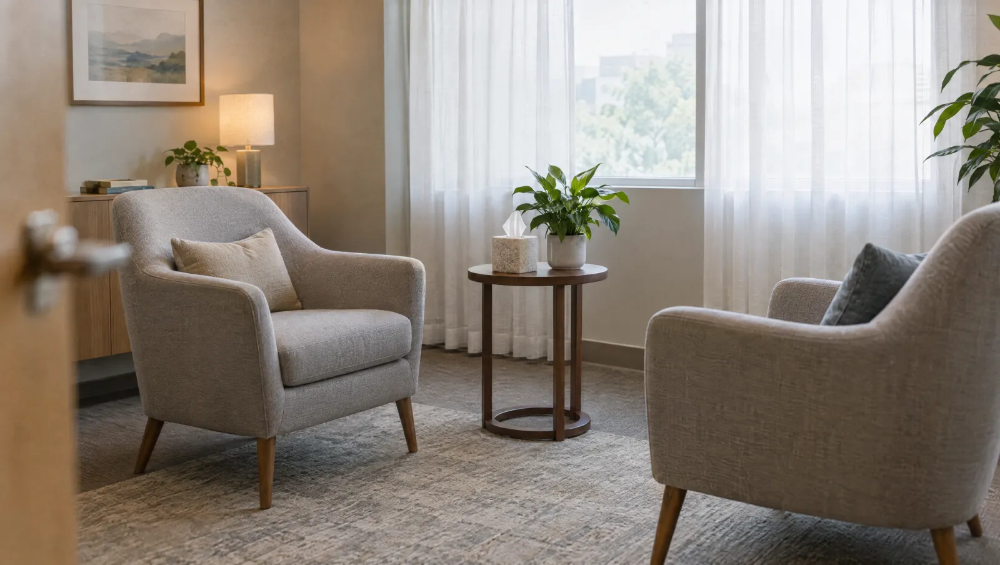

Psikolojik danışmanlık nasıl ilerler?
Psikolog, kaygı, stres, uyku sorunları ve yas gibi zorlu dönemlerde konuşarak çalışan bir sağlık profesyonelidir. Görüşmelerde yaşadıklarınızı anlamaya ve onlarla baş etme yolları geliştirmeye odaklanırsınız. Psikolog ilaç yazamaz. İlaç desteği gerekebileceğini düşündüğünde sizi bir psikiyatri uzmanına yönlendirir. Hastanemizde psikiyatri polikliniği olmadığı için bu yönlendirme başka bir kuruma yapılır.
İlk buluşma daha çok tanışma ve çerçeve belirleme görüşmesidir. Sizi neyin getirdiğini, ne zamandır sürdüğünü ve günlük hayatınızı nasıl etkilediğini konuşursunuz. Psikolog gerekirse kısa ölçekler uygular. Görüşme sonunda izlenecek yolu, görüşme sıklığını ve yaklaşık süreyi birlikte netleştirirsiniz. Söyledikleriniz gizli tutulur; hayati tehlike ve yasal zorunluluk durumları bunun istisnasıdır.
Değişim zaman alır ve düz bir çizgide ilerlemez. Bazı haftalar daha zor geçebilir, bu sürecin olağan bir parçasıdır. Görüşmeler arasında size küçük ödevler verilebilir; örneğin uyku günlüğü tutmak ya da kaygılı anları not etmek. Bu çalışmalar, odada konuştuklarınızı günlük hayata taşımanıza yardım eder.

Destek almayı düşünebileceğiniz dönemler
- Haftalardır geçmeyen kaygı, huzursuzluk ya da sürekli endişe hâli
- Uykuya dalamamak, gece sık uyanmak ya da sabah dinlenmemiş kalkmak
- Bir yakını kaybettikten sonra aylardır süren yoğun keder
- İş, okul ya da aile yaşamında baş edilemeyen stres
- Daha önce keyif aldığınız şeylere ilginin azalması
- Kalp ve diğer nedenler dışlandıktan sonra süren ani çarpıntı ve kontrolü kaybetme korkusu
- Boşanma, taşınma ya da ciddi bir hastalık tanısı gibi hayatı değiştiren olaylar
- İlişkilerde tekrar eden çatışmalar
Acil durumKendinize ya da başkasına zarar verme düşünceniz varsa veya bir yakınınız bunu dile getiriyorsa randevu beklemeyin. 112'yi arayın ya da en yakın acil servise başvurun; acil servisimiz 7/24 açıktır. Kriz anında kişiyi yalnız bırakmayın.
Görüşmelerde birlikte çalışılan konular
- Kaygı ve sürekli endişe
- Panik atak
- İş ve günlük hayat stresi
- Uyku sorunları
- Yas ve kayıp
- Düşük ruh hâli ve isteksizlik
- Özgüven sorunları
- İlişki ve iletişim güçlükleri
- Kronik bir hastalıkla yaşamaya uyum
- Travmatik bir olay sonrası zorlanma
- Sınav ve performans kaygısı
Görüşme biçimleri
Ön görüşme
Başvuru nedeninizin, geçmişinizin ve beklentilerinizin konuşulduğu ilk buluşma. Çalışma planı bu görüşmede şekillenir.
- Süre
- 45-50 dakika
- Hazırlık
- Aklınızdaki soruları not edebilirsiniz
Bireysel terapi görüşmeleri
Belirlenen hedeflere yönelik düzenli görüşmeler. Kaygı ve uyku sorunlarında bilişsel davranışçı teknikler sık kullanılır.
- Süre
- Genellikle 45-50 dakika
Psikolojik ölçekler
Kaygı, ruh hâli ya da uyku düzeyini ölçen standart formlar. Başlangıç durumunu ve zamanla değişimi görmeye yarar.
- Süre
- Teste göre 10-60 dakika
- Hazırlık
- Okuma gözlüğü kullanıyorsanız yanınıza alın
Yas danışmanlığı
Kayıp sonrası yaşanan keder, suçluluk ve öfke gibi duyguların konuşulduğu görüşmeler. Yasın kendi seyrine saygı duyar, onu hızlandırmaya çalışmaz.
Uyku odaklı çalışma
Uyku düzeni, yatak alışkanlıkları ve gece gelen kaygılı düşüncelerle baş etme üzerine kurulu, ilaç dışı bir programdır.
- Hazırlık
- Görüşmeden önce 1-2 hafta uyku günlüğü tutun
İlk görüşmeye nasıl hazırlanabilirsiniz?
- Sizi zorlayan durumları birkaç kısa notla yazın
- Kullandığınız ilaçları ve daha önce aldığınız psikolojik ya da psikiyatrik desteği hatırlayın
- Uyku şikâyetiniz varsa bir hafta boyunca yatış ve kalkış saatlerinizi kaydedin
- Görüşmeyi yoğun bir işin arasına sıkıştırmayın, birkaç dakika erken gelin
- Görüşme sıklığı ya da gizlilik gibi merak ettiklerinizi sormaktan çekinmeyin
Psikoloji hekimleri

Psikoloğa gitmeyi düşünenlerin sorduğu sorular
Psikolog ile psikiyatrist arasındaki fark nedir?
Psikiyatrist, tıp eğitiminin ardından psikiyatri uzmanlığı yapmış bir hekimdir; tanı koyar ve ilaç yazabilir. Psikolog ise psikoloji eğitimi almıştır. Görüşme, değerlendirme ve terapiyle çalışır, ilaç yazamaz. İki meslek çoğu zaman birbirini tamamlar. Hastanemizde psikiyatri polikliniği bulunmuyor. Bu yüzden ilaç değerlendirmesi gereken durumlarda psikoloğunuz sizi başka bir kurumdaki psikiyatri uzmanına yönlendirir; isterseniz psikolog görüşmeleriniz burada sürer.
Görüşmede anlattıklarım başkalarıyla paylaşılır mı?
Konuştuklarınız gizlidir; aileniz ya da işvereniniz dahil kimseyle paylaşılmaz. Gizliliğin sınırı, sizin ya da başkasının hayatının tehlikede olduğu durumlar ve yasal zorunluluklardır. Bu sınırları psikoloğunuz ilk görüşmede açıkça anlatır.
Kaç görüşmeye ihtiyacım olacak?
Bu, konunun niteliğine ve hedeflerinize bağlıdır. Belirli bir stres durumu için birkaç görüşme yetebilir. Uzun süredir devam eden sorunlarda süreç aylar alabilir. İlerlemeyi belli aralıklarla birlikte gözden geçirirsiniz.
Uykusuzluk için psikologla çalışmak işe yarar mı?
Konuşma temelli yöntemler, uykusuzlukta kullanılan seçeneklerden biridir. Psikolog, uyku düzeninizi ve yatakta sizi uyanık tutan düşünceleri sizinle birlikte inceler. Yatış saatlerini düzenlemek ve gevşeme teknikleri bu çalışmanın parçasıdır. Hâlihazırda uyku ilacı kullanıyorsanız ilacı kendi kendinize bırakmayın; ilaçla ilgili her kararı reçeteyi yazan hekimle verin.
Yakınımı kaybettim, yaşadıklarım olağan mı?
Yas; üzüntü, öfke, suçluluk, uykusuzluk ve dalgınlık gibi pek çok farklı tepkiyle yaşanabilir. Bunların çoğu kayba verilen doğal yanıtlardır ve zamanla yumuşar. Öte yandan aylar geçtiği hâlde günlük işlerinizi yapamıyorsanız destek almak iyi gelebilir. Kendinize zarar verme düşünceleriniz varsa beklemeden 112'yi arayın.
Bu sayfayı Uzm. Psk. Melis Güneri gözden geçirdi. Son güncelleme: 7 Ekim 2026.